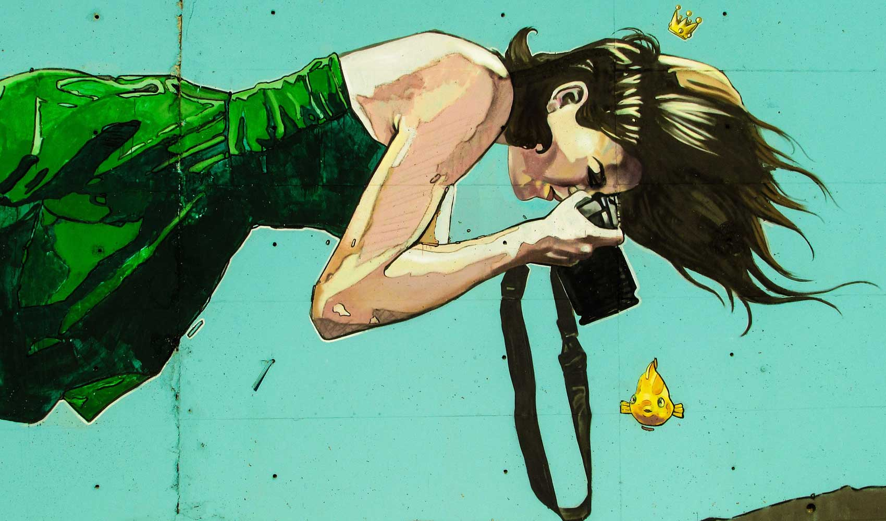
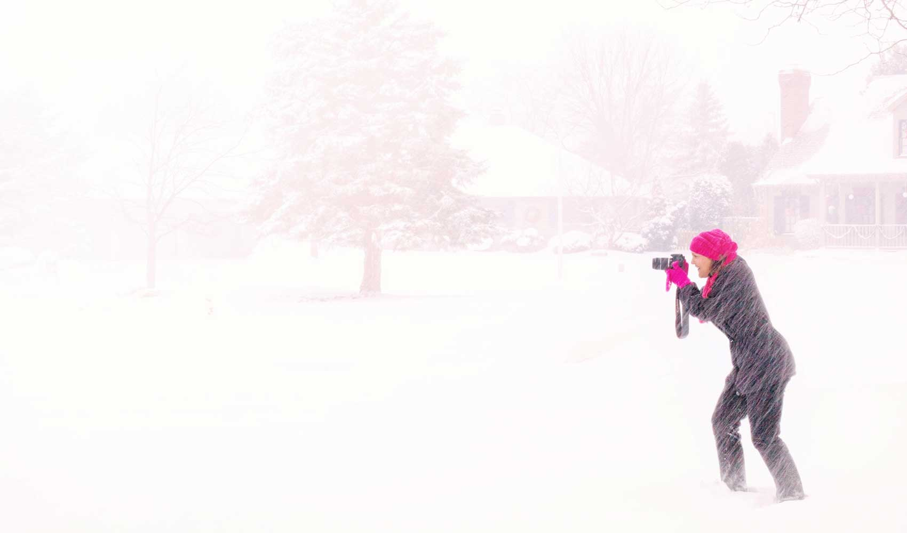

×
Rachel Weisz

Rachel Hannah Weisz was born on 7 March, 1970, in London, U.K., to Edith Ruth (Teich), a psychoanalyst, and George Weisz, an inventor. Her parents both came to England around 1938. Her father is a Hungarian Jewish immigrant, and her mother, from Vienna, is of Italian and Austrian Jewish heritage. Rachel has a sister, Minnie, a curator and ... See full bio »
- 
- 
I Love Photo
Photo Life
Do like Photo
Let's Go
About Me
Photography is the use of cameras, video recorders to record the image of people and things. Different scenes have different shooting skills, night shooting, shooting, shooting, rain building portraits, film art is also a kind of dynamic shooting shooting, but must follow certain principles. With the progress of science and technology, shooting has become more and more simple, more and more popular.